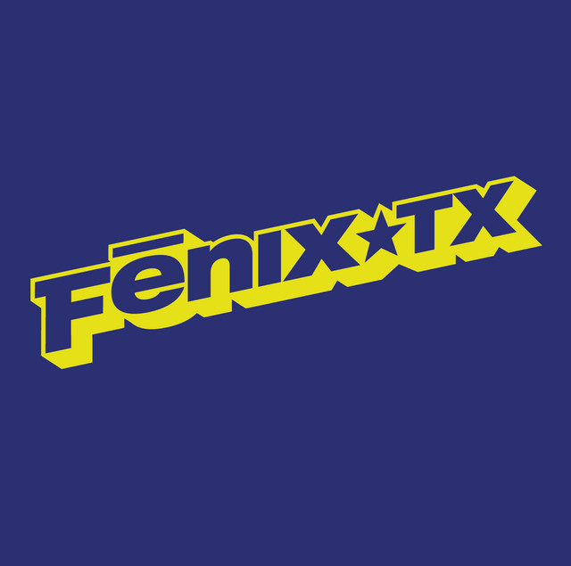

31 Days of Punk
The punk album for 12/04/2025 is:
Debut/Fenix TX
by Fenix TX
Ben's thoughts
With only a few releases over their 30 year history Fenix TX might not have the biggest glove but they do pack a heavy punch. Their self titled debut album is a masterclass in the stylings of late 90s pop-punk. This band stands to represent the home city of Connor and I - Houston, Texas. What many may not know about this bayou city is that apart from its popularity in the genres of R&B, country and hip-hop, we actually have a pretty great punk scene. I would argue that as punk music for years has been sought after in the northeast, midwest and west coast of the United States, the need for a punk scene is that much more vital in cities like Houston.
Fenix TX perfectly executes the fast-paced, high octane rhythms of the pop-punk genre, while including their own humorous outtakes into the lyrics. Examples of this include quoting Judas Priest in the song “G.B.O.H.” and my personal highlight of the album being the revamping of the lyrics to the safety dance in the bridge of “Apple Pie Cowboy Toothpaste.” And while some might put this album off as a hodgepodge of pop-punk buzz, it is actually a well coordinated album. There is strong continuity between tracks musically and lyrically, including consistent references to a character named “Jolly Green.” So while Fenix TX may not have put out a lot of music, what is out there is very well thought out. This band, like other punk bands in the south, teaches us that the music we love can be accessible anywhere, not just in its birth city. If you want to hear more live punk, I guarantee it is around you, you just have to look closer.
Connor's thoughts
“Ben is 1000% gonna pick ‘Ben’ as his favorite track” - Me this morning
Before having to change their name due to a cease and desist from the actor, Riverfenix TX operated in a city known not for its punk scene, but rather for Rap, Hip Hop, R&B, and Country.
Houston Texas has been our home for a little over half my life, and there is possibly no greater pride I get than listening to the incredibly talented artists it produces. From ZZ Top to the Geto Boys, Fenix TX fits right into the niche the city needed in the late 90s, and their debut album came at a time where skate and pop-punk was more popular than ever.
Heard in their fast riffs and less than sultry voiced lead singer, this album takes listeners surfing (pun intended) through a sea of themes, spanning anywhere between a deceiving partner and the fallout due to a lack of trust, to a song about “roosters”. It doesn’t intend to follow any rules on what the album should be or how it should be perceived, that being political vs. serious vs. silly, but rather it's just a bunch of dudes having fun and playing fast. This is very apparent in their writing as much as their playing, using immature terms and references to other areas of music in order to ultimatley talk about a variety of different pressures the average person experiences. It's dissapointing that the band has so few albums in their 30 year history, but to be fair, sometimes that perfect debut is all you need to make your mark on the genre.
Personally, I could listen to this album over and over. The bass riff at the beginning of No Lie is my second favorite bass line of all time (The first coming up on the 19th of the month), i’m a sucker for a whiney voice over a speedy guitar, and just as I mentioned earlier, this album gives me so much pride in my city, so I can jam out and feel a greater connection to a band for simply living down the road.
So as far as your large personal collection of pop-punk records go, I think it’s vital to have this one up on the shelf, and just as Benjamin said, any music scene is anywhere, you just might have to look a little deeper.
Listen on Spotify: